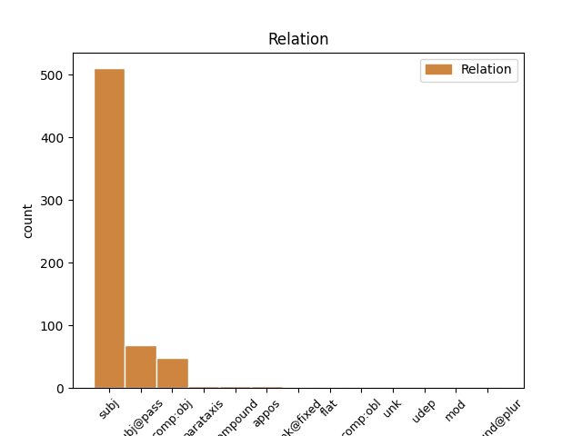
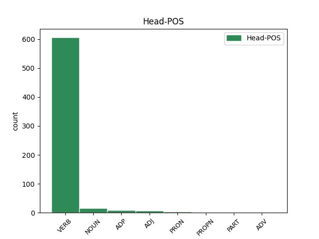
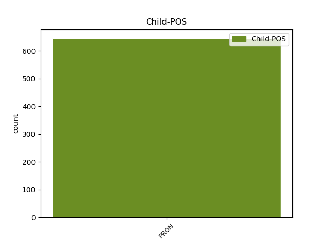

Distribution of features within this leaf



Agreement Rules sorted by frequency.
- When the dependent token is the subject(subj) of the head token, and the dependent token is PRON.
1 Kamu kamu PRON PS2 Number=Sing|Person=2|Polite=Infm|PronType=Prs 3 subj _ MorphInd=^kamu_PS2$
2 selalu _ _ _ _ 0 _ _ _
3 bertanya bertanya VERB VSA Number=Sing|Voice=Act 0 _ _ _
4 apa _ _ _ _ 0 _ _ _
5 itu _ _ _ _ 0 _ _ _
6 Pi _ _ _ _ 0 _ _ _
7 ? _ _ _ _ 0 _ _ _
1 Ia ia PRON PS3 Number=Sing|Person=3|PronType=Prs 2 subj@pass _ MorphInd=^ia_PS3$
2 diceritakan diceritakan VERB VSP Number=Sing|Voice=Pass 0 _ _ _
3 bercakap _ _ _ _ 0 _ _ _
4 - _ _ _ _ 0 _ _ _
5 cakap _ _ _ _ 0 _ _ _
6 dengan _ _ _ _ 0 _ _ _
7 Ka _ _ _ _ 0 _ _ _
8 ' _ _ _ _ 0 _ _ _
9 ab _ _ _ _ 0 _ _ _
10 Al _ _ _ _ 0 _ _ _
11 - _ _ _ _ 0 _ _ _
12 Ahbar _ _ _ _ 0 _ _ _
13 , _ _ _ _ 0 _ _ _
14 seorang _ _ _ _ 0 _ _ _
15 Yahudi _ _ _ _ 0 _ _ _
16 yang _ _ _ _ 0 _ _ _
17 telah _ _ _ _ 0 _ _ _
18 masuk _ _ _ _ 0 _ _ _
19 Islam _ _ _ _ 0 _ _ _
20 dan _ _ _ _ 0 _ _ _
21 ikut _ _ _ _ 0 _ _ _
22 datang _ _ _ _ 0 _ _ _
23 bersamanya _ _ _ _ 0 _ _ _
24 dari _ _ _ _ 0 _ _ _
25 Madinah _ _ _ _ 0 _ _ _
26 , _ _ _ _ 0 _ _ _
27 mengenai _ _ _ _ 0 _ _ _
28 tempat _ _ _ _ 0 _ _ _
29 terbaik _ _ _ _ 0 _ _ _
30 untuk _ _ _ _ 0 _ _ _
31 membangun _ _ _ _ 0 _ _ _
32 sebuah _ _ _ _ 0 _ _ _
33 masjid _ _ _ _ 0 _ _ _
34 . _ _ _ _ 0 _ _ _
1 Allahku _ _ _ _ 0 _ _ _
2 , _ _ _ _ 0 _ _ _
3 ya _ _ _ _ 0 _ _ _
4 Allahku _ _ _ _ 0 _ _ _
5 , _ _ _ _ 0 _ _ _
6 mengapa _ _ _ _ 0 _ _ _
7 Engkau _ _ _ _ 0 _ _ _
8 meninggalkan mentinggalkan VERB VSA Number=Sing|Voice=Act 0 _ _ _
9 aku aku PRON PS1 Number=Sing|Person=1|Polite=Infm|PronType=Prs 8 comp:obj _ MorphInd=^aku_PS1$|SpaceAfter=No
10 ? _ _ _ _ 0 _ _ _
1 Pada _ _ _ _ 0 _ _ _
2 umumnya _ _ _ _ 0 _ _ _
3 suhu _ _ _ _ 0 _ _ _
4 yang _ _ _ _ 0 _ _ _
5 optimal _ _ _ _ 0 _ _ _
6 untuk _ _ _ _ 0 _ _ _
7 pertumbuhan _ _ _ _ 0 _ _ _
8 jamur _ _ _ _ 0 _ _ _
9 tiram _ _ _ _ 0 _ _ _
10 , _ _ _ _ 0 _ _ _
11 dibedakan _ _ _ _ 0 _ _ _
12 dalam _ _ _ _ 0 _ _ _
13 dua _ _ _ _ 0 _ _ _
14 fase _ _ _ _ 0 _ _ _
15 yaitu _ _ _ _ 0 _ _ _
16 fase _ _ _ _ 0 _ _ _
17 inkubasi _ _ _ _ 0 _ _ _
18 yang _ _ _ _ 0 _ _ _
19 memerlukan _ _ _ _ 0 _ _ _
20 suhu _ _ _ _ 0 _ _ _
21 udara _ _ _ _ 0 _ _ _
22 berkisar _ _ _ _ 0 _ _ _
23 antara _ _ _ _ 0 _ _ _
24 22 _ _ _ _ 0 _ _ _
25 - _ _ _ _ 0 _ _ _
26 28 _ _ _ _ 0 _ _ _
27 OC _ _ _ _ 0 _ _ _
28 dengan _ _ _ _ 0 _ _ _
29 kelembapan _ _ _ _ 0 _ _ _
30 60 _ _ _ _ 0 _ _ _
31 - _ _ _ _ 0 _ _ _
32 70 _ _ _ _ 0 _ _ _
33 % _ _ _ _ 0 _ _ _
34 dan _ _ _ _ 0 _ _ _
35 fase _ _ _ _ 0 _ _ _
36 pembentukan _ _ _ _ 0 _ _ _
37 tubuh _ _ _ _ 0 _ _ _
38 buah _ _ _ _ 0 _ _ _
39 memerlukan _ _ _ _ 0 _ _ _
40 suhu _ _ _ _ 0 _ _ _
41 udara _ _ _ _ 0 _ _ _
42 antara _ _ _ _ 0 _ _ _
43 16 _ _ _ _ 0 _ _ _
44 - _ _ _ _ 0 _ _ _
45 22 _ _ _ _ 0 _ _ _
46 OC _ _ _ _ 0 _ _ _
47 . _ _ _ _ 0 _ _ _
48 Tingkat _ _ _ _ 0 _ _ _
49 keasaman keasaman NOUN NSD Number=Sing 0 _ _ _
50 media media PRON NSD Number=Sing 49 compound _ MorphInd=^media_NSD$
51 juga _ _ _ _ 0 _ _ _
52 sangat _ _ _ _ 0 _ _ _
53 berpengaruh _ _ _ _ 0 _ _ _
54 terhadap _ _ _ _ 0 _ _ _
55 pertumbuhan _ _ _ _ 0 _ _ _
56 jamur _ _ _ _ 0 _ _ _
57 tiram _ _ _ _ 0 _ _ _
58 . _ _ _ _ 0 _ _ _
1 ( _ _ _ _ 0 _ _ _
2 Nai _ _ _ _ 0 _ _ _
3 kyrie _ _ _ _ 0 _ _ _
4 sy _ _ _ _ 0 _ _ _
5 oidas _ _ _ _ 0 _ _ _
6 hoti _ _ _ _ 0 _ _ _
7 filō _ _ _ _ 0 _ _ _
8 se _ _ _ _ 0 _ _ _
9 ) _ _ _ _ 0 _ _ _
10 Catatan _ _ _ _ 0 _ _ _
11 : _ _ _ _ 0 _ _ _
12 Kata _ _ _ _ 0 _ _ _
13 " _ _ _ _ 0 _ _ _
14 filō _ _ _ _ 0 _ _ _
15 " _ _ _ _ 0 _ _ _
16 ( _ _ _ _ 0 _ _ _
17 atau _ _ _ _ 0 _ _ _
18 " _ _ _ _ 0 _ _ _
19 philō _ _ _ _ 0 _ _ _
20 " _ _ _ _ 0 _ _ _
21 ) _ _ _ _ 0 _ _ _
22 adalah _ _ _ _ 0 _ _ _
23 bentuk _ _ _ _ 0 _ _ _
24 kata _ _ _ _ 0 _ _ _
25 kerja _ _ _ _ 0 _ _ _
26 untuk _ _ _ _ 0 _ _ _
27 orang orang NOUN NSD Number=Sing 0 _ _ _
28 pertama _ _ _ _ 0 _ _ _
29 tunggal _ _ _ _ 0 _ _ _
30 ( _ _ _ _ 0 _ _ _
31 " _ _ _ _ 0 _ _ _
32 aku aku PRON PS1 Number=Sing|Person=1|Polite=Infm|PronType=Prs 27 appos _ MorphInd=^aku_PS1$|SpaceAfter=No
33 " _ _ _ _ 0 _ _ _
34 ) _ _ _ _ 0 _ _ _
35 yang _ _ _ _ 0 _ _ _
36 berasal _ _ _ _ 0 _ _ _
37 dari _ _ _ _ 0 _ _ _
38 kata _ _ _ _ 0 _ _ _
39 dasar _ _ _ _ 0 _ _ _
40 , _ _ _ _ 0 _ _ _
41 artinya _ _ _ _ 0 _ _ _
42 " _ _ _ _ 0 _ _ _
43 mengasihi _ _ _ _ 0 _ _ _
44 " _ _ _ _ 0 _ _ _
45 atau _ _ _ _ 0 _ _ _
46 " _ _ _ _ 0 _ _ _
47 menyayangi _ _ _ _ 0 _ _ _
48 " _ _ _ _ 0 _ _ _
49 dalam _ _ _ _ 0 _ _ _
50 makna _ _ _ _ 0 _ _ _
51 " _ _ _ _ 0 _ _ _
52 persahabatan _ _ _ _ 0 _ _ _
53 " _ _ _ _ 0 _ _ _
54 . _ _ _ _ 0 _ _ _
1 Kan _ _ _ _ 0 _ _ _
2 kamu kamu PRON PS2 Number=Sing|Person=2|Polite=Infm|PronType=Prs 0 _ _ _
3 yang _ _ _ _ 0 _ _ _
4 bilang _ _ _ _ 0 _ _ _
5 ? _ _ _ _ 0 _ _ _
6 - _ _ _ _ 0 _ _ _
7 Bukankah _ _ _ _ 0 _ _ _
8 kamu kamu PRON PS2 Number=Sing|Person=2|Polite=Infm|PronType=Prs 2 parataxis _ MorphInd=^kamu_PS2$
9 yang _ _ _ _ 0 _ _ _
10 bilang _ _ _ _ 0 _ _ _
11 demikian _ _ _ _ 0 _ _ _
12 ? _ _ _ _ 0 _ _ _
1 Adakah ada PRON ASP+T-- Degree=Pos|Number=Sing 5 mod _ MorphInd=^ada_ASP+kah_T--$
2 dapat _ _ _ _ 0 _ _ _
3 ahlun _ _ _ _ 0 _ _ _
4 nujum _ _ _ _ 0 _ _ _
5 mengembalikan menkembalikan VERB VSA Number=Sing|Voice=Act 0 _ _ _
6 balik _ _ _ _ 0 _ _ _
7 daripada _ _ _ _ 0 _ _ _
8 jin _ _ _ _ 0 _ _ _
9 itu _ _ _ _ 0 _ _ _
10 ? _ _ _ _ 0 _ _ _
1 Untuk _ _ _ _ 0 _ _ _
2 itu _ _ _ _ 0 _ _ _
3 , _ _ _ _ 0 _ _ _
4 ia _ _ _ _ 0 _ _ _
5 berjuang _ _ _ _ 0 _ _ _
6 membangkitkan menbangkitkan VERB VSA Number=Sing|Voice=Act 0 _ _ _
7 Ame _ _ _ _ 0 _ _ _
8 no _ _ _ _ 0 _ _ _
9 Murakumo _ _ _ _ 0 _ _ _
10 seorang _ _ _ _ 0 _ _ _
11 diri diri PRON NSD Number=Sing 6 comp:obl _ MorphInd=^diri_NSD$
12 tanpa _ _ _ _ 0 _ _ _
13 memedulikan _ _ _ _ 0 _ _ _
14 dirinya _ _ _ _ 0 _ _ _
15 sendiri _ _ _ _ 0 _ _ _
16 . _ _ _ _ 0 _ _ _
1 Walaupun _ _ _ _ 0 _ _ _
2 demikian _ _ _ _ 0 _ _ _
3 ketiga _ _ _ _ 0 _ _ _
4 sandiwara _ _ _ _ 0 _ _ _
5 ini _ _ _ _ 0 _ _ _
6 tidak _ _ _ _ 0 _ _ _
7 pernah _ _ _ _ 0 _ _ _
8 dipentaskan _ _ _ _ 0 _ _ _
9 sendiri sendiri PRON ASP Degree=Pos|Number=Sing 0 _ _ _
10 - _ _ _ _ 0 _ _ _
11 sendiri sendiri PRON ASP Degree=Pos|Number=Sing 9 compound@plur _ MorphInd=^sendiri_ASP$|SpaceAfter=No
12 , _ _ _ _ 0 _ _ _
13 namun _ _ _ _ 0 _ _ _
14 berangkai _ _ _ _ 0 _ _ _
15 sebagai _ _ _ _ 0 _ _ _
16 sebuah _ _ _ _ 0 _ _ _
17 trilogi _ _ _ _ 0 _ _ _
18 panjang _ _ _ _ 0 _ _ _
19 . _ _ _ _ 0 _ _ _
1 Kok _ _ _ _ 0 _ _ _
2 kamu kamu PRON PS2 Number=Sing|Person=2|Polite=Infm|PronType=Prs 0 _ _ _
3 terlambat _ _ _ _ 0 _ _ _
4 ? _ _ _ _ 0 _ _ _
5 - _ _ _ _ 0 _ _ _
6 Kenapa _ _ _ _ 0 _ _ _
7 kamu kamu PRON PS2 Number=Sing|Person=2|Polite=Infm|PronType=Prs 2 unk _ MorphInd=^kamu_PS2$
8 terlambat _ _ _ _ 0 _ _ _
9 ? _ _ _ _ 0 _ _ _
1 " _ _ _ _ 0 _ _ _
2 Melontarkan _ _ _ _ 0 _ _ _
3 " _ _ _ _ 0 _ _ _
4 tidak _ _ _ _ 0 _ _ _
5 dia _ _ _ _ 0 _ _ _
6 hamil _ _ _ _ 0 _ _ _
7 dengan _ _ _ _ 0 _ _ _
8 anak anak NOUN NSD Number=Sing 0 _ _ _
9 Anda anda PRON PS2 Number=Sing|Person=2|Polite=Form|PronType=Prs 8 flat _ MorphInd=^anda_PS2$|SpaceAfter=No
10 ? _ _ _ _ 0 _ _ _
Disagree Examples:
1 Sebuah _ _ _ _ 0 _ _ _
2 serangan _ _ _ _ 0 _ _ _
3 pengayauan _ _ _ _ 0 _ _ _
4 biasanya _ _ _ _ 0 _ _ _
5 terjadi _ _ _ _ 0 _ _ _
6 di _ _ _ _ 0 _ _ _
7 ladang _ _ _ _ 0 _ _ _
8 atau _ _ _ _ 0 _ _ _
9 dengan _ _ _ _ 0 _ _ _
10 membakar _ _ _ _ 0 _ _ _
11 sebuah _ _ _ _ 0 _ _ _
12 rumah _ _ _ _ 0 _ _ _
13 dan _ _ _ _ 0 _ _ _
14 memenggal _ _ _ _ 0 _ _ _
15 semua _ _ _ _ 0 _ _ _
16 penghuninya _ _ _ _ 0 _ _ _
17 ketika _ _ _ _ 0 _ _ _
18 mereka mereka PRON PP3 Number=Plur|Person=3|PronType=Prs 19 subj _ MorphInd=^mereka_PP3$
19 melarikan menlarikan VERB VSA Number=Sing|Voice=Act 0 _ _ _
20 diri _ _ _ _ 0 _ _ _
21 . _ _ _ _ 0 _ _ _
1 Bagaimana _ _ _ _ 0 _ _ _
2 bisa _ _ _ _ 0 _ _ _
3 kita kita PRON PP1 Clusivity=In|Number=Plur|Person=1|PronType=Prs 5 subj _ MorphInd=^kita_PP1$
4 tidak _ _ _ _ 0 _ _ _
5 mengungkapkan menungkapkan VERB VSA Number=Sing|Voice=Act 0 _ _ _
6 kesedihan _ _ _ _ 0 _ _ _
7 yang _ _ _ _ 0 _ _ _
8 mendalam _ _ _ _ 0 _ _ _
9 akan _ _ _ _ 0 _ _ _
10 semua _ _ _ _ 0 _ _ _
11 hal _ _ _ _ 0 _ _ _
12 ini _ _ _ _ 0 _ _ _
13 ? _ _ _ _ 0 _ _ _
1 Beberapa _ _ _ _ 0 _ _ _
2 bulan _ _ _ _ 0 _ _ _
3 sebelum _ _ _ _ 0 _ _ _
4 Rose _ _ _ _ 0 _ _ _
5 dan _ _ _ _ 0 _ _ _
6 kawan _ _ _ _ 0 _ _ _
7 - _ _ _ _ 0 _ _ _
8 kawan _ _ _ _ 0 _ _ _
9 lulus _ _ _ _ 0 _ _ _
10 dari _ _ _ _ 0 _ _ _
11 akademi _ _ _ _ 0 _ _ _
12 , _ _ _ _ 0 _ _ _
13 mereka mereka PRON PP3 Number=Plur|Person=3|PronType=Prs 15 subj _ MorphInd=^mereka_PP3$
14 wajib _ _ _ _ 0 _ _ _
15 mengikuti menikuti VERB VSA Number=Sing|Voice=Act 0 _ _ _
16 ujian _ _ _ _ 0 _ _ _
17 lapangan _ _ _ _ 0 _ _ _
18 . _ _ _ _ 0 _ _ _
1 Duryodana _ _ _ _ 0 _ _ _
2 yang _ _ _ _ 0 _ _ _
3 selalu _ _ _ _ 0 _ _ _
4 merasa _ _ _ _ 0 _ _ _
5 cemburu _ _ _ _ 0 _ _ _
6 dengan _ _ _ _ 0 _ _ _
7 Pandawa _ _ _ _ 0 _ _ _
8 , _ _ _ _ 0 _ _ _
9 selalu _ _ _ _ 0 _ _ _
10 berusaha _ _ _ _ 0 _ _ _
11 membunuh menbunuh VERB VSA Number=Sing|Voice=Act 0 _ _ _
12 mereka mereka PRON PP3 Number=Plur|Person=3|PronType=Prs 11 comp:obj _ MorphInd=^mereka_PP3$|SpaceAfter=No
13 . _ _ _ _ 0 _ _ _
1 Membangun _ _ _ _ 0 _ _ _
2 sebuah _ _ _ _ 0 _ _ _
3 komunitas _ _ _ _ 0 _ _ _
4 memang _ _ _ _ 0 _ _ _
5 tidak _ _ _ _ 0 _ _ _
6 mudah _ _ _ _ 0 _ _ _
7 , _ _ _ _ 0 _ _ _
8 tetapi _ _ _ _ 0 _ _ _
9 mereka mereka PRON PP3 Number=Plur|Person=3|PronType=Prs 10 subj _ MorphInd=^mereka_PP3$
10 yakin yakin VERB ASP Degree=Pos|Number=Sing 0 _ _ _
11 bahwa _ _ _ _ 0 _ _ _
12 Rockto _ _ _ _ 0 _ _ _
13 dengan _ _ _ _ 0 _ _ _
14 konsep _ _ _ _ 0 _ _ _
15 yang _ _ _ _ 0 _ _ _
16 menarik _ _ _ _ 0 _ _ _
17 dapat _ _ _ _ 0 _ _ _
18 menarik _ _ _ _ 0 _ _ _
19 minat _ _ _ _ 0 _ _ _
20 para _ _ _ _ 0 _ _ _
21 pengguna _ _ _ _ 0 _ _ _
22 internet _ _ _ _ 0 _ _ _
23 untuk _ _ _ _ 0 _ _ _
24 menjadi _ _ _ _ 0 _ _ _
25 bagian _ _ _ _ 0 _ _ _
26 dari _ _ _ _ 0 _ _ _
27 komunitasnya _ _ _ _ 0 _ _ _
28 . _ _ _ _ 0 _ _ _